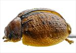
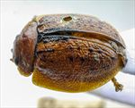
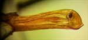
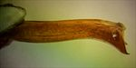
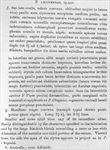

Click on images to enlarge
{kind=link}

Paropsis laeviventris type specimen, lateral view
{kind=link}

Paropsis laeviventris type specimen, dorsal view
{kind=link}

Paropsis laeviventris type specimen, aedeagus, dorsal view
{kind=link}

Paropsis laeviventris type specimen, aedeagus, lateral view
{kind=link}

Paropsis laeviventris, description
Name
Trachymela laeviventris (Blackburn, 1896)
Type specimen
Location: BMNH
Label data: “Type” (red-bordered circle), “6123 Ad. T”, “Blackburn coll. 1910-236.”, “Paropsis laeviventris Blackb.”
Male; Size: 8.15x 6.3x 3.5 mm; HCE/BL: 24.5 mm (approx, from photo measurements).
Aedeagus has been extracted at some time, LPE 4.1 mm approx.
Original description
[Original description shown in figure, translated from Latin using ChatGPT]
Rather broadly oval, less convex, the greatest height (seen from the side) situated a little before the middle of the elytral margin; rather shining; chestnut-coloured (elytra with an elongate spot in some specimens, with a posterior submarginal stripe in others, the scutellum and sterna black; antennae dark).
Pronotum rather strongly punctured on the sides and more densely elsewhere; distinctly transversely impressed behind the anterior margin; sides slightly flattened and rather strongly rounded; posterior angles absent.
Scutellum nearly smooth.
Elytra beneath the humeral callus slightly triangularly depressed; a little behind the base slightly and distinctly transversely impressed; rather densely and distinctly punctured in somewhat serial arrangement (scarcely stronger toward the sides). Interstices rather strongly rugulose.
Verrucae sparse and less conspicuous, forming two series (approximately in the 5th and 9th interstices). Marginal portion, humeral callus, and epipleura as in P. Chapuisi.
Basal ventral segment less distinctly punctured.
Length 3 4/5 – 4 1/2 lines (8.5-10.1mm); width 3 – 3 2/5 lines (6.75-8.1mm).Notes
This is clearly the same species as Ta89, from comparison of size, sculpture of dorsal surface and adeagus shape and length.
References
Blackburn, T. 1896, "Revision of the genus Paropsis. Part I", Proceedings of the Linnean Society of New South Wales, vol. 21, no. 4, 637-693 (page 652).
Copyright © 2026. All rights reserved.